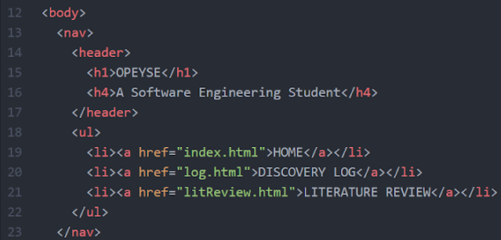
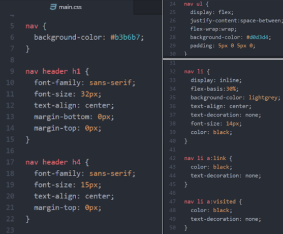

Research
When creating a navigation toolbar you must identify what content you want to display. The standard navigation toolbar content would vary depending on what the website is designed for. The home button is normally placed in the navigation bar. Most toolbars will use home instead of homepage because it gives out the same information with fewer words. Minimisation is key for any web page. Inside the navigation menu, there is sometimes a contact button. This is used to give the user different methods of contacting the creator of the webpage. Not all toolbars include contact and reason may vary depending on the site. Some navigation menus contain and an about button, which is used to give the user information about why the website was created.
The Samsung website has a navigation bar where all the names are in capital letters. This stood out to me and I would like to add this function to my website. I would like my website to be minimalistic. After viewing a range of websites I realised I had a preference. I preferred websites that didn't bombard you with information. I enjoyed viewing the Apple website because it is minimal. The web page for the IPad mini 4 uses lots white spaces and simple nav bar. Many navigations bars use a hover function to add more information about what is being hovered over. Personally I found this distracting and as a result, I will not add this function to my website. I think the navigation bar should be easy to understand, therefore it should not need any extra information. The Apple website waits for the user to click on the navigation bar and it opens up a new page, which has an extra navigation bar. I like this idea and I will try and embed it into my work.
My navigation bar in HTML
In HTML5 inside the body, I created my navigation bar. I used the nav tag to hold all the information about my navigation menu. A header tag was used to hold the title information. I used an unordered list tag to group all the list. The unordered list tag should contain everything I wanted to be the navigation bar. A hypertext reference (href) was used to link a word to the right page, as a result when these words are clicked the user will go to the linked page. The diagram below shows the navigation menu in HTML.
My navigation bar in CSS
